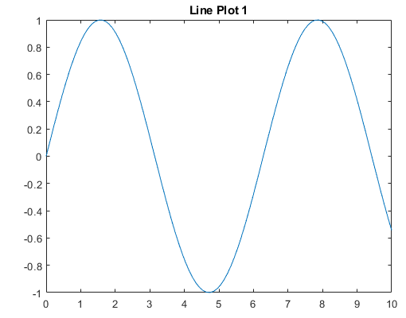
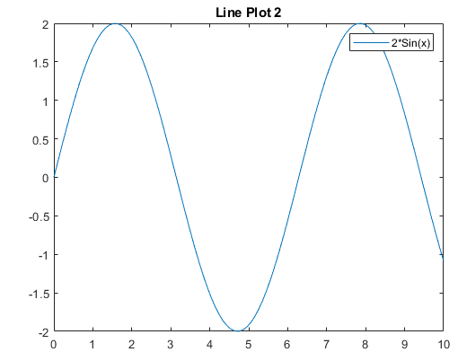
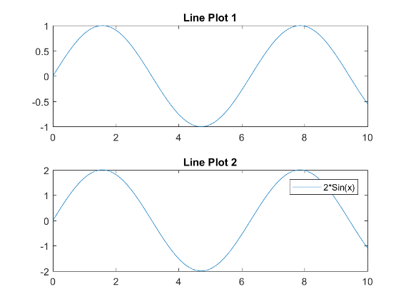

subplot
Create axes in tiled positions
Syntax
Description
Note
tiledlayout is recommended over
subplot because it enables you to create
layouts with adjustable tile spacing, tiles that reflow according to the
size of the figure, and better placed colorbars and legends.
subplot(
divides the current figure into an m,n,p)m-by-n
grid and creates axes in the position specified by p.
MATLAB® numbers subplot positions by row. The first subplot is the first
column of the first row, the second subplot is the second column of the first
row, and so on. If axes exist in the specified position, then this command makes
the axes the current axes.
subplot( creates
axes in the custom position specified by 'Position',pos)pos. Use
this option to position a subplot that does not align with grid positions.
Specify pos as a four-element vector of the form [left
bottom width height]. If the new axes overlap existing axes,
then the new axes replace the existing axes.
subplot(___, modifies axes
properties using one or more name-value pair arguments. Set axes properties
after all other input arguments.Name,Value)
Examples
Create a figure with two stacked subplots. Plot a sine wave in each one.
subplot(2,1,1); x = linspace(0,10); y1 = sin(x); plot(x,y1) subplot(2,1,2); y2 = sin(5*x); plot(x,y2)

Create a figure divided into four subplots. Plot a sine wave in each one and title each subplot.
subplot(2,2,1) x = linspace(0,10); y1 = sin(x); plot(x,y1) title('Subplot 1: sin(x)') subplot(2,2,2) y2 = sin(2*x); plot(x,y2) title('Subplot 2: sin(2x)') subplot(2,2,3) y3 = sin(4*x); plot(x,y3) title('Subplot 3: sin(4x)') subplot(2,2,4) y4 = sin(8*x); plot(x,y4) title('Subplot 4: sin(8x)')

Create a figure containing with three subplots. Create two subplots across the upper half of the figure and a third subplot that spans the lower half of the figure. Add titles to each subplot.
subplot(2,2,1); x = linspace(-3.8,3.8); y_cos = cos(x); plot(x,y_cos); title('Subplot 1: Cosine') subplot(2,2,2); y_poly = 1 - x.^2./2 + x.^4./24; plot(x,y_poly,'g'); title('Subplot 2: Polynomial') subplot(2,2,[3,4]); plot(x,y_cos,'b',x,y_poly,'g'); title('Subplot 3 and 4: Both')

Create a figure with four stem plots of random data. Then replace the second subplot with empty axes.
for k = 1:4 data = rand(1,10); subplot(2,2,k) stem(data) end

subplot(2,2,2,'replace')
Create a figure with two subplots that are not aligned with grid positions. Specify a custom position for each subplot.
pos1 = [0.1 0.3 0.3 0.3]; subplot('Position',pos1) y = magic(4); plot(y) title('First Subplot') pos2 = [0.5 0.15 0.4 0.7]; subplot('Position',pos2) bar(y) title('Second Subplot')

Create a figure with two polar axes. Create a polar line chart in the upper subplot and a polar scatter chart in the lower subplot.
figure ax1 = subplot(2,1,1,polaraxes); theta = linspace(0,2*pi,50); rho = sin(theta).*cos(theta); polarplot(ax1,theta,rho) ax2 = subplot(2,1,2,polaraxes); polarscatter(ax2,theta,rho)

Create a figure with two subplots. Assign the Axes objects to the variables ax1 and ax2. Specify the Axes objects as inputs to the plotting functions to ensure that the functions plot into a specific subplot.
ax1 = subplot(2,1,1); Z = peaks; plot(ax1,Z(1:20,:)) ax2 = subplot(2,1,2); plot(ax2,Z)

Modify the axes by setting properties of the Axes objects. Change the font size for the upper subplot and the line width for the lower subplot. Some plotting functions set axes properties. Execute plotting functions before specifying axes properties to avoid overriding existing axes property settings. Use dot notation to set properties.
ax1.FontSize = 15; ax2.LineWidth = 2;

Create a figure with multiple subplots. Store the Axes objects in vector ax. Then make the second subplot the current axes. Create a line chart and change the axis limits for the second subplot. By default, graphics functions target the current axes.
for k = 1:4 ax(k) = subplot(2,2,k); end subplot(ax(2)) x = linspace(1,50); y = sin(x); plot(x,y,'Color',[0.1, 0.5, 0.1]) title('Second Subplot') axis([0 50 -1 1])

Create a line chart. Then convert the axes so that it is the lower subplot of the figure. The subplot function uses the figure in which the original axes existed.
x = linspace(1,10);
y = sin(x);
plot(x,y)
title('Sine Plot')
ax = gca; subplot(2,1,2,ax)

Combine axes that exist in separate figures in a single figure with subplots.
Create two plots in two different figures. Assign the Axes
objects to the variables ax1 and ax2.
Assign the Legend object to the variable
lgd.
figure
x = linspace(0,10);
y1 = sin(x);
plot(x,y1)
title('Line Plot 1')
ax1 = gca;
figure y2 = 2*sin(x); plot(x,y2) title('Line Plot 2') lgd = legend('2*Sin(x)'); ax2 = gca;

Create copies of the two Axes objects
using copyobj. Specify the parents of the copied
axes as a new figure. Since legends and colorbars do not get copied
with the associated axes, copy the legend with the axes.
fnew = figure; ax1_copy = copyobj(ax1,fnew); subplot(2,1,1,ax1_copy) copies = copyobj([ax2,lgd],fnew); ax2_copy = copies(1); subplot(2,1,2,ax2_copy)

Input Arguments
Name-Value Arguments
Tips
To clear the contents of the figure, use
clf. For example, you might clear the existing subplot layout from the figure before creating a new subplot layout.To overlay axes, use the
axescommand instead. Thesubplotfunction deletes existing axes that overlap new axes. For example,subplot('Position',[.35 .35 .3 .3])deletes any underlying axes, butaxes('Position',[.35 .35 .3 .3])positions new axes in the middle of the figure without deleting underlying axes.subplot(111)is an exception and not identical in behavior tosubplot(1,1,1). For reasons of backwards compatibility,subplot(111)is a special case of subplot that does not immediately create axes, but sets up the figure so that the next graphics command executesclf reset. The next graphics command deletes all the figure children and creates new axes in the default position.subplot(111)does not return anAxesobject and an error occurs if code specifies a return argument.
Alternative Functionality
Use the tiledlayout and nexttile
functions to create a configurable tiling of plots. The configuration options include:
Control over the spacing between the plots and around the edges of the layout
An option for a shared title at the top of the layout
Options for shared x- and y-axis labels
An option to control whether the tiling has a fixed size or variable size that can reflow
For more information, see Combine Multiple Plots.
Version History
Introduced before R2006a